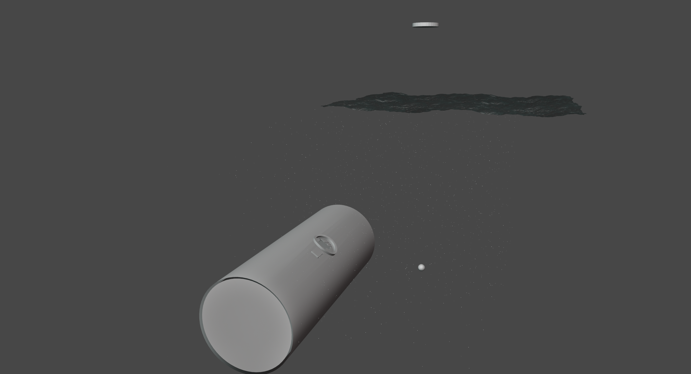
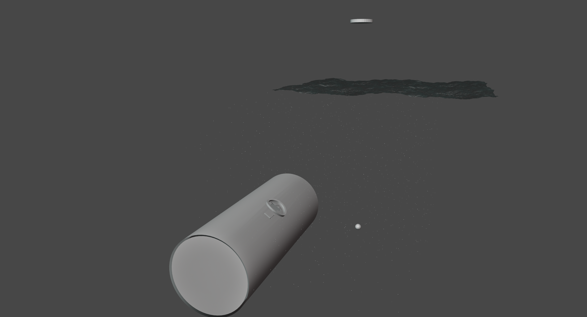

Abyss

3D・Still・März 2024
Die Szene zeigt einen Menschen aus der Ich-Perspektive, welcher sich Unterwasser in einem U-Boot befindet. Das Glas ist zerstört worden, es erscheint jedoch ein Lichtblick an der Wasseroberfläche. Welches Ereignis oder Wesen diese Zerstörung verursacht hat, ist unklar.
▶ Entstehung
Es entstand während des Projektes "Kunstköpfe", bei welchem eine Gruppe von Jugendlichen 1x im Monat selbstständig kurze Lernstunden zu einer Reihe von künstlerischen Themen erstellten und Vorort in Museen durchführten, mit passenden Hausaufgaben. Bei dieser Aufgabe haben die Teilnehmer einem Kunstwerk im Museum 3 Adjektive zugewiesen. Diese wurden dann untereinander verteilt und man sollte ein neues Werk, anhand dieser 3 Adjektive, erschaffen. Hier: kühl, nass und Licht.
▶ Erfahrung
Eine Unterwasser 3D Szene bringt interessante Herausforderungen mit sich, besonders was Lichtreflexe und Volumen angeht.
 Szene im Solid View und anderer Winkel.

Komplette Szene aus anderer Perspektive im Solid View.
Szene im Solid View und anderer Winkel.

Komplette Szene aus anderer Perspektive im Solid View.